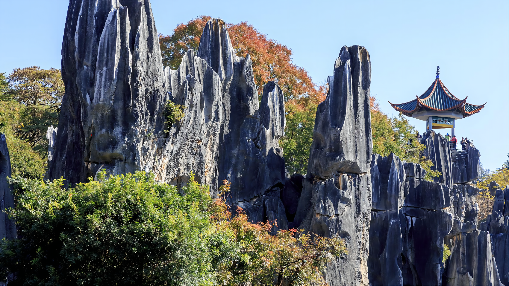
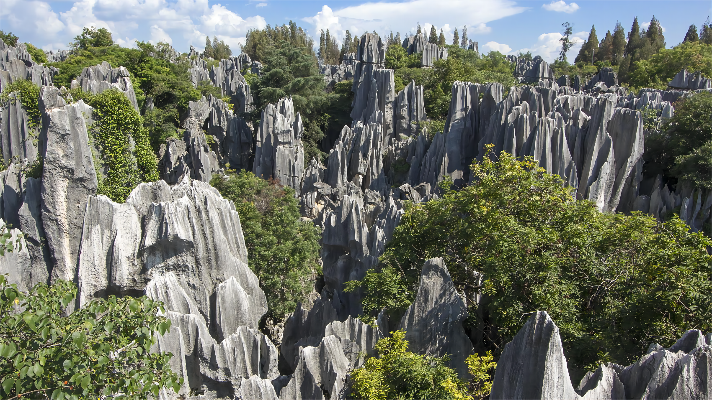
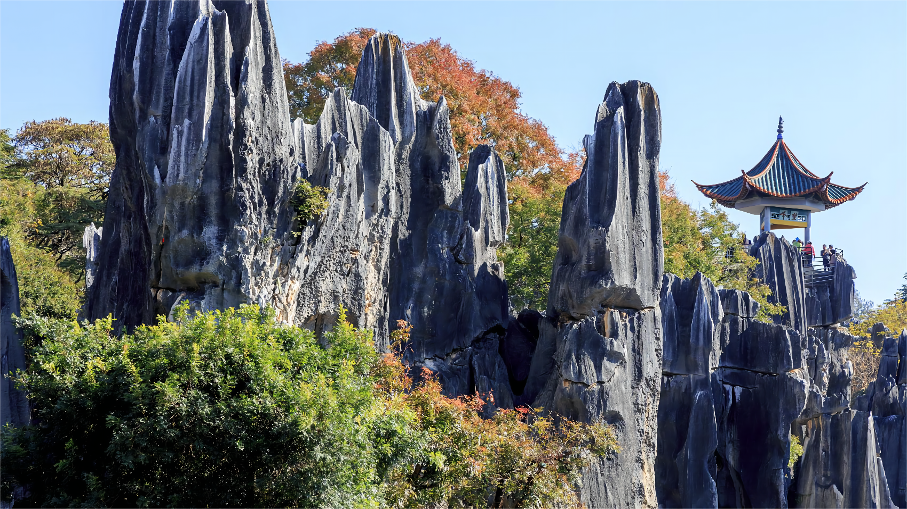
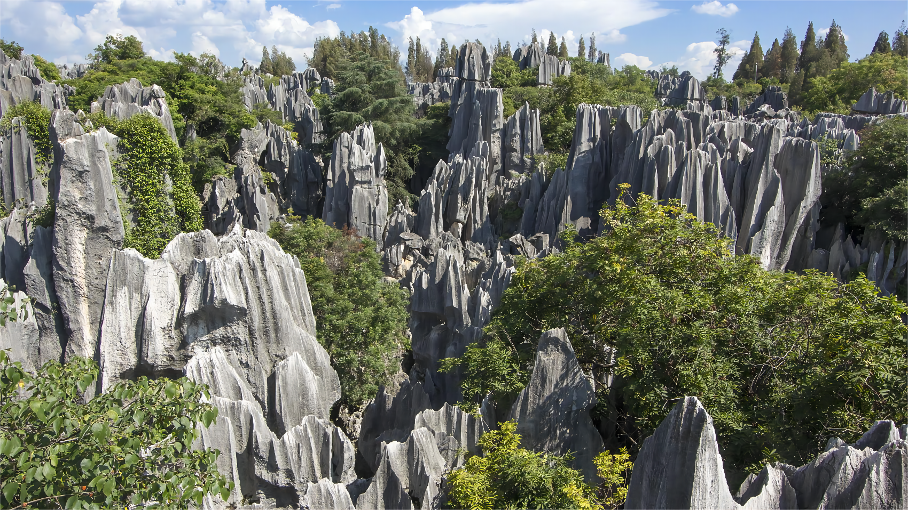
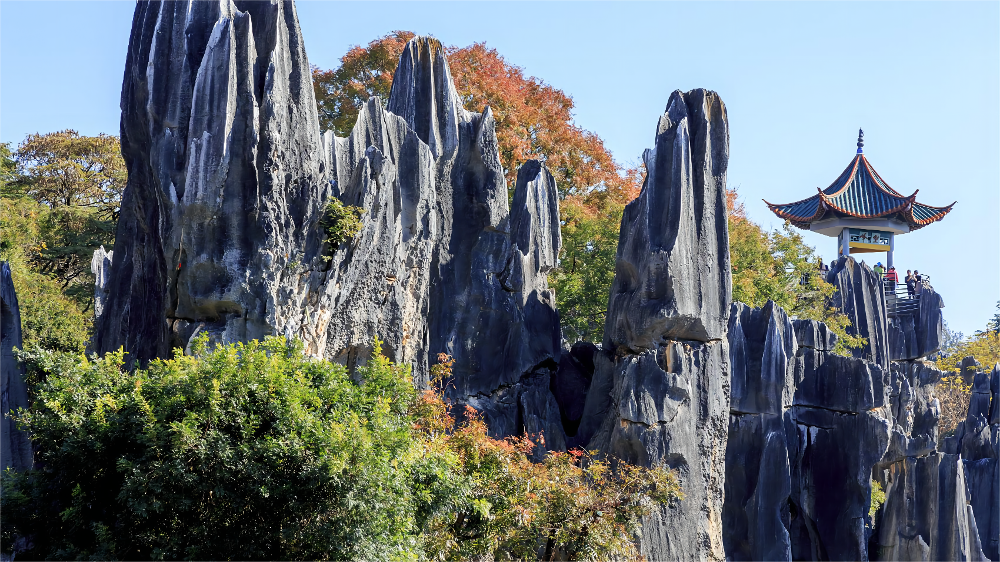
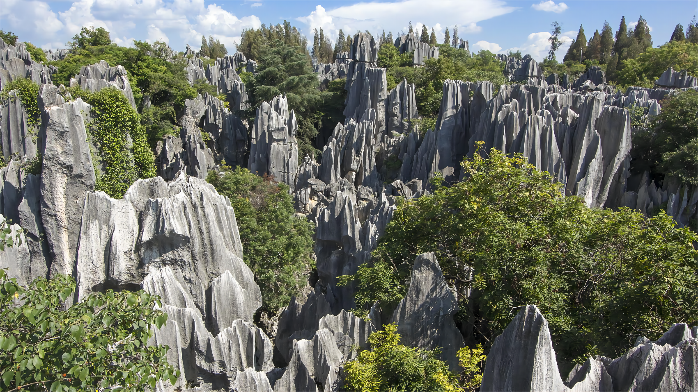
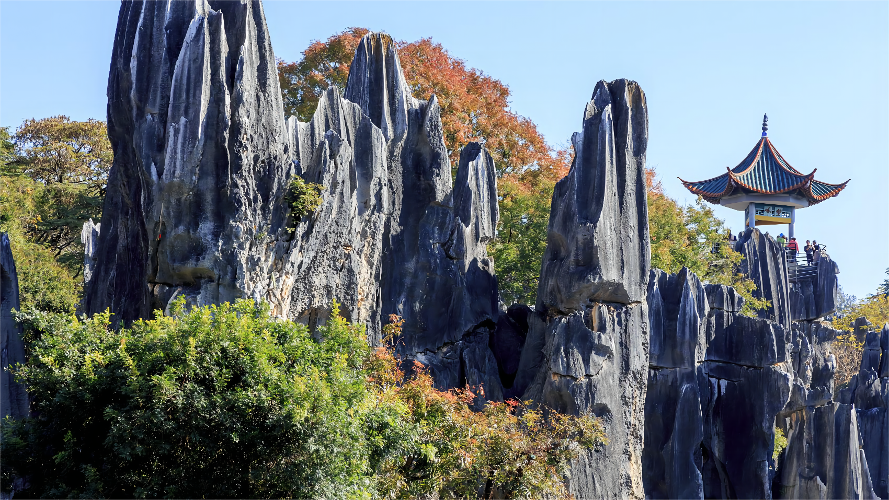
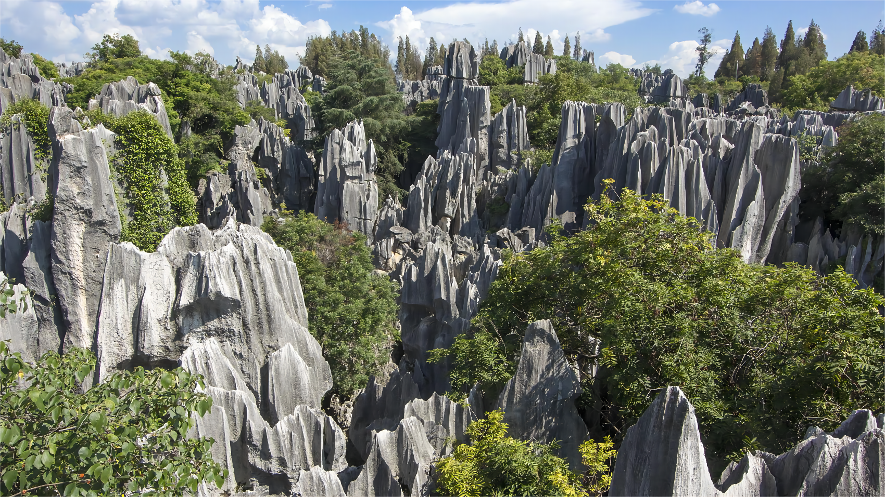

石林
石林景区位于昆明石林县，素有“天下第一奇观”的美誉，也是昆明的必游景点之一。石林是典型的喀斯特地貌，石峰、石芽、落水洞、地下河遍布.
石林景区位于昆明石林县，素有“天下第一奇观”的美誉，也是昆明的必游景点之一。石林是典型的喀斯特地貌，石峰、石芽、落水洞、地下河遍布，峰林幻化成各种形态，剑状、塔状、蘑菇状等等，千奇百怪美轮美奂。石林景区的几大片区分布较为疏散，以大小石林景区为中心，乃古石林位于大小石林景区以北约12公里处，大叠水景区位于大小石林景区西南约29公里处，长湖景区则位于大小石林景区东南方26公里处。常规的游玩石林多指大小石林。大小石林位于同一区域，左边即是规模较小、石峰略为平缓的小石林景区，在一片茂密的峰丛中，着名的阿诗玛石即屹立在此，巍峨的峰林幻化成一位亭亭玉立的彝族姑娘阿诗玛，仿佛正在向你招手，这里是游人最爱的合影之地。除了俊俏的阿诗玛，小石林区还有神骏、簇石擎天等景观，无不形态各异。